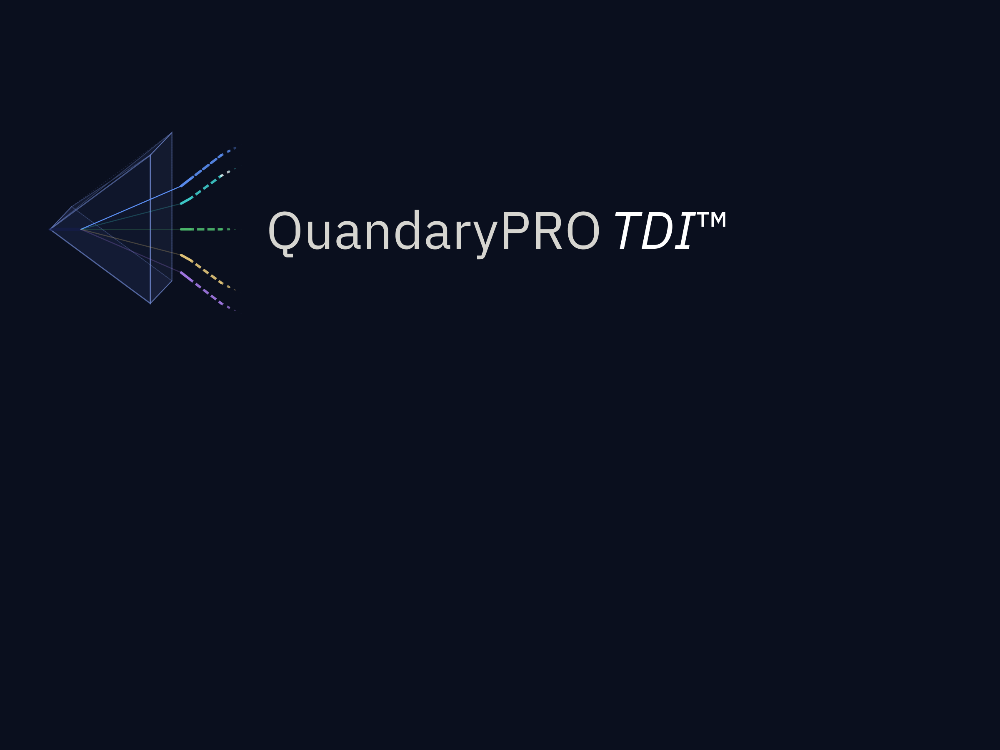

The responsibility for successful execution delivery — and the strategic outcomes it produces — rests with those who hold enterprise value creation in their hands.
Every strategic plan rests on an assumption that is almost never examined. That the leadership and those in critical execution roles are capable of delivering it — at the quality it demands, under the pressure it will generate, in the direction it requires.
That assumption is where execution value is most often lost. Not in the strategy itself. In the gap between what the plan requires and what those in critical execution roles can reliably deliver.
That gap is rarely visible from the centre. It doesn't announce itself. It accumulates — quietly, incrementally — until its cost becomes impossible to ignore.
At that point, the question is no longer whether the gap exists. It is what it has already cost — and what closing it is now worth.
Do you have evidence — rather than assumption — that the right leadership and critical execution capability are in place to deliver what your strategy requires?
And if that evidence is absent or incomplete, do you know what that gap is currently costing you in unrealised enterprise value?
If these questions surface more uncertainty than clarity, that is precisely where QuandaryPRO TDI begins.